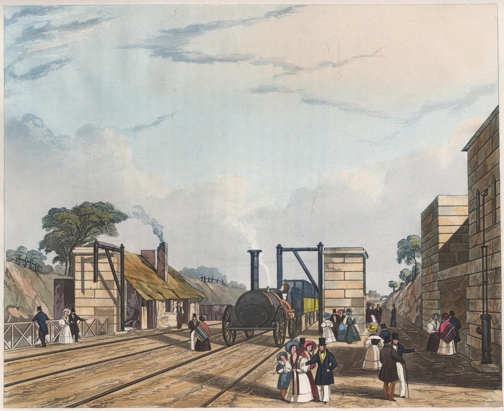
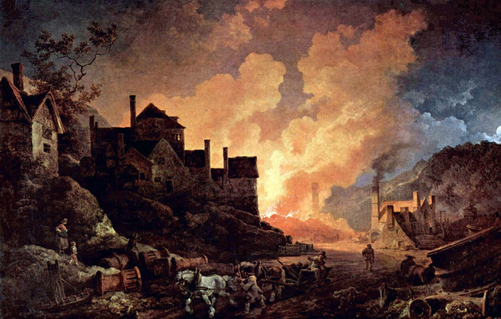
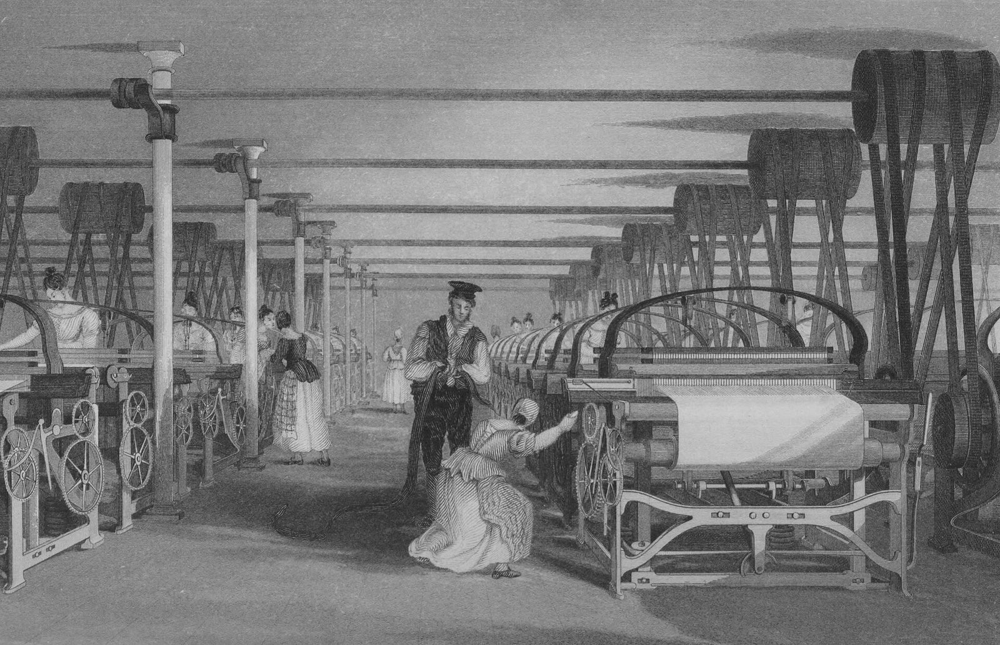
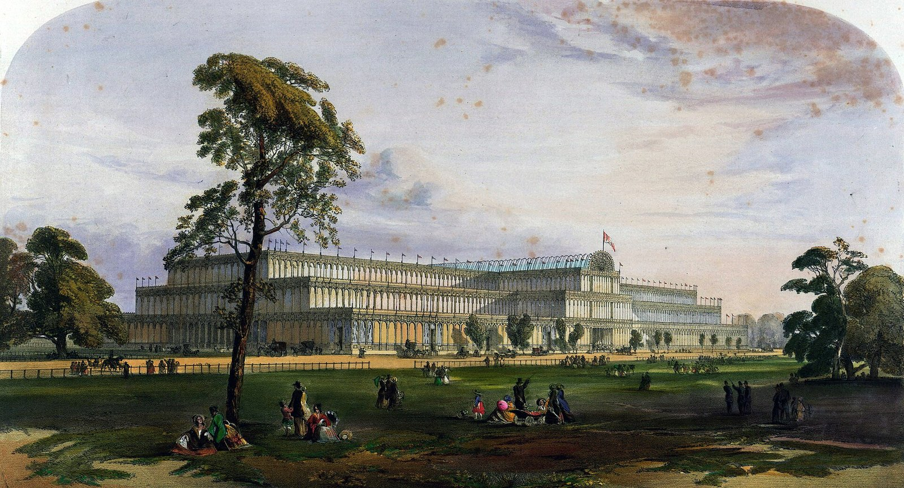

[문명의 궤도, 철도②] 운하 20시간을 철도 2시간으로, 산업혁명과 1830년 리버풀·맨체스터 철도
1832년 리버풀·맨체스터 철도 기록, 하루 승객 1070명과 화물 톤당 10실링
1831년 석탄 3150만톤, 1850년 방적 노동자 한 사람 실 2919파운드
1865년 철도 절감 효과 국민소득의 4~7.5%, 1833년 공장법이 비춘 그늘
AI경제저널=김갑봉 기자 | 1838년 3월 15일 영국 하원. 곡물법 토론에서 벤저민 디즈레일리가 발언했다. 의사록은 그의 말을 3인칭으로 요약했다. 곡물법을 없애도 "대륙이 영국을 세계를 위한 작업장으로 놔두리라" 기대하는 것은 착각이라는 취지였다.
12년 뒤인 1850년 무렵 영국은 세계 석탄의 3분의 2, 면직물과 철의 절반을 만들었다. 경제사학자 그레고리 클라크(Gregory Clark)의 정리다.
1780년대 223파운드에서 1850년 2919파운드로
영국 면직공업은 1760년 원면 260만파운드를 쓰던 작은 산업이었다. 1760년대 중반 하그리브스의 제니 방적기가 나왔다. 1769년 아크라이트가 수력방적기 특허를 받았고 1779년께 크럼프턴의 뮬 방적기가 뒤를 이었다.
1780년대 후반 방적 노동자 한 사람이 한 해에 뽑은 실은 223파운드(약 101㎏)였다. 아이는 0.5명으로 셈한 당대 사람 콜커훈의 수치다. 피터 모(Peter Maw) 등 영국·아일랜드·벨기에·미국 대학의 경제사학자 네 사람이 2022년 논문에 옮겼다.
이들은 1850년 값을 2919파운드(약 1324㎏)로 셈했다. 원면 수입 6억파운드 안팎에서 가공 손실 10%를 빼고 공장 방적 노동자 18만5000명으로 나눈 값이다.
1780년대 후반보다 열세 배가 넘는다. 실 준비공까지 넣어 어림한 초기 제니 방적기 시절 몫 187파운드와 견주면 열다섯 배를 넘는다.
원면도 쏟아져 들어왔다. 클라크가 정리한 표를 보면 영국 원면 소비는 1800년 5160만파운드(약 2만3400톤)였다. 1850년에는 6억2100만파운드(약 28만톤)다. 반세기 만에 열두 배가 됐다.
기계를 돌린 힘은 처음에 물이었다. 영국 경제사학자 니컬러스 크래프츠(Nicholas Crafts)는 캐네프스키의 1979년 동력 추계를 옮겼다. 증기기관은 1830년에야 수력과 같은 16만마력에 이르렀다. 그해 증기기관은 영국 자본 총량의 1.5%쯤이었다.
운하 20시간, 철도 2시간
리버풀 항구와 맨체스터 방직공장 사이 짐은 운하가 맡았다. 운하 회사들은 철도가 나오기 전까지 높은 통행료를 매겼다. 스티븐슨 부자의 전기를 쓴 새뮤얼 스마일스는 운하가 "때로는 얼어붙었다"고 적었다.
1824년 10월 리버풀·맨체스터 철도회사가 첫 설립 취지서를 냈다. "물자가 흔히 21일 만에 뉴욕에서 리버풀까지 대서양을 건너온다"고 적었다. 리버풀에서 맨체스터까지는 어떤 때 그보다 오래 걸렸다고 했다.
1825년 3월 2일 하원 의사록에는 철도를 놓자는 쪽 주장이 남아 있다. 운하로는 "36시간 아래로 걸리지 않고" 철도로는 "6시간을 넘지 않는다"는 말이었다. 반대편 필립스 의원은 머지·어웰 운하로 12시간이면 된다고 맞섰다.
개통 뒤 기록에서 철도는 철도 쪽 약속보다도 빨랐다. 1832년판 『애뉴얼 레지스터』는 화물이 철도로 2시간, 운하로 20시간 걸린다고 적었다. 운하로 부친 짐은 사흘째가 되기 전에 닿는 일이 없었다고도 했다.
리버풀·맨체스터 철도는 1830년 문을 열었다. 맨체스터 과학산업박물관은 이 철도를 여객과 화물을 함께 나르도록 설계한 세계 첫 증기 동력 도시 간 철도로 소개한다.

『애뉴얼 레지스터』는 개통 뒤 18개월 동안 철도가 70만명을 실었다고 적었다. 하루 평균은 1070명으로 적었다. 개통 전에는 정기 역마차 22대와 임시 7대 안팎을 다 채워도 하루 688명이었다.
운임은 역마차 안자리 10실링, 바깥자리 5실링에서 철도 5실링, 3실링 6펜스로 내렸다. 4시간 걸리던 길이 1시간 45분이 됐다. 역마차는 한 대만 남았다.
화물 운임은 톤당 철도 10실링, 예전 운하 15실링이었다. 운하는 운임을 30% 내렸다. 맨체스터 인근 제조업자들은 원면 운반비만 한 해 2만파운드를 아꼈다고 이 기록은 적었다.
1831년 석탄 3150만톤, 운하와 철도가 낮춘 운임
석탄은 공장의 증기기관과 제철소 용광로, 철도 기관차를 함께 먹였다. 1831년 영국 석탄 생산은 3150만톤이었다. 같은 해 미국과 독일, 프랑스, 벨기에를 다 합쳐도 670만톤이었다. 뉴욕대 아부다비 경제사학자 로버트 앨런이 2023년 논문에 옮긴 값이다.
1853~1862년 영국 석탄 생산은 한 해 평균 7151만톤(통계표 단위 미터톤)이다. 영국 정부 공식 통계 「역사 석탄 자료」가 내놓은 가장 이른 값이다. 1831년 값의 두 배를 넘는다.
클라크와 데이비드 잭스는 2007년 논문에서 석탄이 늘어난 까닭을 채탄 기술보다 수요에서 찾았다. 앨런은 운송비에 눈을 돌렸다. 1842년 운하가 석탄 운송에서 거둔 사회적 절감을 172만3000파운드로 셈했다. 석탄 운송 효율을 29% 높인 값이다.
1840년대 철도는 톤마일당 1.5펜스까지 운임을 낮출 수 있었다. 운하는 살아남으려고 요금을 크게 깎았다. 경제사학자 댄 보가트(Dan Bogart)는 영국 교통혁명을 정리하며 화물 요금을 따졌다. 화물 요금은 1700~1870년 실질 기준으로 95% 떨어졌다.
1660~1750년 숯 쇠 2만2000톤, 1780년대 교련법
18세기 초 영국 제철은 숯을 땠다. 영국 제철사학자 필립 라이든(Philip Riden)이 숯 제철 시대 생산을 쟀다. 1660~1750년 영국 선철은 한 해 2만2000톤 안팎에서 오르내렸다.
1700~1704년 한 해 평균은 2만1900톤이었다. 1780년대 헨리 코트가 교련법(puddling, 녹인 선철을 저어 불순물을 태워 내고 연철을 얻는 제철법)을 내놨다. 특허 연도는 자료에 따라 1782년과 1784년으로 갈린다.

1851년 노선 6336마일, 철도가 남긴 몫
1826년부터 해마다 새로 연 노선을 더하면 그레이트브리튼에서 1830년 70마일, 1840년 1470마일이다. 1845년부터 아일랜드를 넣어 센 이 통계로 1850년은 6590마일이다.
케임브리지대 등 연구진은 1851년 잉글랜드·웨일스·스코틀랜드에 열려 있던 노선을 6336마일(약 1만200㎞)로 잡는다.
크래프츠는 1855년 철도 자본 총량이 국내총생산의 30%에 이르렀다고 봤다. 철도가 경제에 남긴 몫을 재는 잣대가 사회적 절감이다. 철도가 없었다면 같은 짐과 사람을 옮기는 데 얼마가 더 들었을지 셈한다.
뉴질랜드 경제사학자 개리 호크(Gary Hawke)는 1970년 책 『잉글랜드·웨일스의 철도와 경제성장 1840~1870』에서 1865년 잉글랜드·웨일스 철도를 쟀다. 보가트의 정리를 보면 운임 절감만 따질 때 국민소득의 약 4%다. 여객의 편안함까지 넣으면 약 7.5%다.
미국 경제사학자 로버트 포겔(Robert Fogel)은 1964년 책 『철도와 미국 경제성장』에서 미국 철도를 같은 잣대로 쟀다. 1890년 철도가 미국 국민총생산에 보탠 몫은 많아야 5%라고 봤다.
보가트는 호크의 결론을 들어 잉글랜드·웨일스 철도의 절감이 미국보다 조금 컸다고 정리했다. 호크는 1840~1870년 철도 총요소생산성이 한 해 3.0%씩 늘었다고 봤다.
크래프츠도 호크의 연구를 들었다. 19세기 중반 철도의 영향은 컸지만 철도 부문이 국내총생산에 견줘 아직 작아 전체 성장률을 바꾸지는 못했다는 정리다.
영국 경제사학자 팀 리우닉(Tim Leunig)은 2006년 논문에서 잉글랜드·웨일스 여객이 아낀 시간과 돈을 다시 쟀다. 1912년 그 몫은 국민소득의 14%였다. 그 가운데 시간 절감이 10%를 넘었다.
리우닉은 철도가 경제 전체 생산성 증가의 6분의 1쯤을 설명한다고 봤다. 1912년 여객이 누린 소비자 잉여는 국민소득의 6%였다. 보가트는 리우닉의 추계를 들어 1870년 철도가 아껴 준 시간의 값어치만 국민소득의 5%를 넘었다고 정리했다.
크래프츠는 성장회계로 철도의 몫을 쟀다. 철도가 노동생산성 증가에 보탠 몫은 1830~1850년 한 해 0.16%포인트였다. 1850~1870년에는 0.26%포인트로 올랐다.
증기기관과 철도를 합친 증기 기술 전체로는 1800~1830년 한 해 0.02%포인트였다. 1830~1850년 0.20%포인트, 1850~1870년 0.38%포인트로 커졌다. 크래프츠는 증기의 기여가 19세기 3분기에 정점에 올랐다고 결론지었다.
1833년 공장법·인도 손베틀, 1851년 수정궁
1833년 영국 공장법은 견직 공장을 빼고 9세 미만 고용을 막았다. 법조문 제8조는 하루 9시간, 주 48시간 상한을 처음 11세 미만에 걸고 30개월에 걸쳐 13세 미만까지 넓혔다.
견직 공장의 13세 미만은 하루 10시간까지 허용했다. 같은 조 제목은 8시간으로 적었고 의회 해설도 8시간을 따른다. 13~18세는 하루 12시간까지였다.

13세 미만에게는 하루 2시간 수업을 받게 했다. 공장감독관은 4명이었다. 이들이 맡은 공장은 4000곳이었다. 영국 의회 공식 해설은 법이 널리 지켜지지 않았다고 적는다.
영국 면직물은 인도 시장으로도 들어갔다. 인도 손베틀은 곧바로 무너지지 않았다. 스티븐 브로드베리와 비슈누프리야 굽타가 2009년 논문에서 이를 짚었다.
두 사람은 19세기 엘리슨의 자료를 들어 인도 생산자가 적어도 1860년대까지 자국 시장에서 영국보다 큰 몫을 댔다고 봤다. 영국에서 인도까지 옮기는 운송비가 그때까지 인도 생산자를 지켰다.
두 사람이 인용한 트워미의 1983년 추산을 보면 인도 시장에서 영국산 비중은 1850년 10%였다. 1880~1884년 60%로 정점에 올랐다.
1851년 런던 하이드파크에 만국박람회장이 섰다. 쇠와 유리를 뼈대로 짓고 나무 벽과 마루를 더한 건물이다. 1851년 나온 건축 해설서는 목수가 준비한 나무 창살대가 205마일이었다고 적었다.
시사 주간지 『펀치』는 1850년 하반기 호에서 박람회장을 「수정 궁전」이라 불렀다. 런던박물관은 수정궁(Crystal Palace)이라는 이름을 『펀치』가 붙였다고 소개한다.

디즈레일리는 1838년 하원에서 「세계를 위한 작업장」을 말했다. 철도가 아껴 준 여객의 시간과 돈은 1912년 잉글랜드·웨일스 국민소득의 14%에 이르렀다.
참고문헌
- Maw, P., Solar, P., Kane, A. & Lyons, J. S.(2022), "After the great inventions: technological change in UK cotton spinning, 1780–1835", 『Economic History Review』 75(1), 22~55쪽. https://eprints.whiterose.ac.uk/175067/
- Allen, R. C.(2023), "The Transportation Revolution and the English Coal Industry, 1695–1842: A Geographical Approach", 『Journal of Economic History』 83(4), 1175~1220쪽. DOI 10.1017/S0022050723000402
- Clark, G. & Jacks, D.(2007), "Coal and the Industrial Revolution, 1700–1869", 『European Review of Economic History』 11(1), 39~72쪽. https://gpih.ucdavis.edu/files/Clark_Jacks.pdf
- Clark, G., "4. The Industrial Revolution", 교재 초고 제4장, UC 데이비스. https://faculty.econ.ucdavis.edu/faculty/gclark/ecn110b/readings/chapter4.pdf
- Riden, P.(1994), "The final phase of charcoal iron-smelting in Britain, 1660–1800", 『Historical Metallurgy』 28(1), 14~26쪽. https://hmsjournal.org/index.php/home/article/view/471
- Crafts, N.(2004), "Steam as a General Purpose Technology: A Growth Accounting Perspective", 『Economic Journal』 114(495), 338~351쪽. https://www.lse.ac.uk/asset-library/information/wp7503.pdf
- Leunig, T.(2006), "Time is Money: A Re-Assessment of the Passenger Social Savings from Victorian British Railways", 『Journal of Economic History』 66(3), 635~673쪽. DOI 10.1017/S0022050706000283
- Bogart, D.(2012), "The Transport Revolution in Industrializing Britain: A Survey", UC Irvine 워킹페이퍼(호크 1970 인용). https://www.economics.uci.edu/files/docs/workingpapers/2012-13/bogart-06.pdf
- Broadberry, S. & Gupta, B.(2009), "Lancashire, India, and shifting competitive advantage in cotton textiles, 1700–1850", 『Economic History Review』 62(2), 279~305쪽. https://www.lse.ac.uk/Economic-History/Assets/Documents/Research/GEHN/GEHNConferences/conf6/Conf6-BroadberryGupta.pdf
- Satchell, M. 외(2023), "1851 England, Wales and Scotland Rail Lines", UK Data Service ReShare 852991. https://reshare.ukdataservice.ac.uk/852991/
- 영국 하원 의사록(Hansard), "Corn Laws", 1838년 3월 15일, 41권 940단. https://api.parliament.uk/historic-hansard/commons/1838/mar/15/corn-laws
- 영국 하원 의사록(Hansard), "Liverpool and Manchester Rail-way Bill", 1825년 3월 2일, 12권 845~854단. https://api.parliament.uk/historic-hansard/commons/1825/mar/02/liverpool-and-manchester-rail-way-bill
- 「An Act to regulate the Labour of Children and young Persons in the Mills and Factories of the United Kingdom」(1833) 제8조, legislation.gov.uk. https://www.legislation.gov.uk/ukpga/Will4/3-4/103/enacted
- UK Parliament, "The 1833 Factory Act", Living Heritage. https://www.parliament.uk/about/living-heritage/transformingsociety/livinglearning/19thcentury/overview/factoryact/
- 영국 에너지안보·탄소중립부, "Historical coal data: coal production, availability and consumption". https://www.gov.uk/government/statistical-data-sets/historical-coal-data-coal-production-availability-and-consumption
- Federal Reserve Bank of St. Louis FRED, "Increases in Length of Railway Line Opened for Traffic for Great Britain"(NBER a02085a). https://fred.stlouisfed.org/data/A0285AGBA374NNBR
- Science and Industry Museum, "The first railways". https://www.scienceandindustrymuseum.org.uk/objects-and-stories/first-railways
- Smiles, S., 『Lives of George and Robert Stephenson』 2부 9장(1824년 리버풀·맨체스터 철도회사 설립 취지서 인용), Grace's Guide. https://www.gracesguide.co.uk/Lives_of_George_and_Robert_Stephenson_by_Samuel_Smiles:_Part_2:_Chapter_9
- 『Annual Register』 1832년판, 리버풀·맨체스터 철도 개통 뒤 18개월 기록(Peel Web 전재). https://historyhome.co.uk/peel/railways/benefit.htm
[사진 출처]
- [사진1] Thomas Talbot Bury 원화, S. G. Hughes·H. Pyall 판각, 「Coloured View on the Liverpool and Manchester Railway, 1831.jpg」, 위키미디어 공용, 퍼블릭 도메인. https://commons.wikimedia.org/wiki/File:Coloured_View_on_the_Liverpool_and_Manchester_Railway,_1831.jpg
- [사진2] Philip James de Loutherbourg, 「Coalbrookdale by Night」(1801), 「Philipp Jakob Loutherbourg d. J. 002.jpg」, 위키미디어 공용, 퍼블릭 도메인. https://commons.wikimedia.org/wiki/File:Philipp_Jakob_Loutherbourg_d._J._002.jpg
- [사진3] T. Allom 그림, J. Tingle 판각, Baines 『History of the Cotton Manufacture in Great Britain』(1835), 「Powerloom weaving in 1835.jpg」, 위키미디어 공용, 퍼블릭 도메인. https://commons.wikimedia.org/wiki/File:Powerloom_weaving_in_1835.jpg
- [사진4] Dickinson Brothers, 『Dickinsons' Comprehensive Pictures of the Great Exhibition of 1851』, 위키미디어 공용, 퍼블릭 도메인. https://commons.wikimedia.org/wiki/File:Crystal_Palace_from_the_northeast_from_Dickinson%27s_Comprehensive_Pictures_of_the_Great_Exhibition_of_1851._1854.jpg